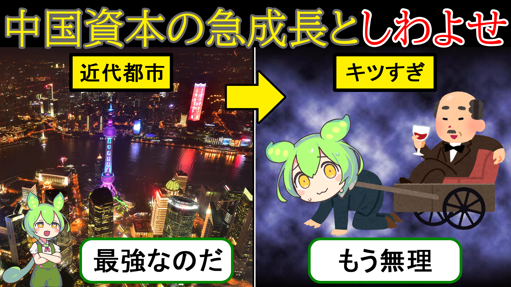
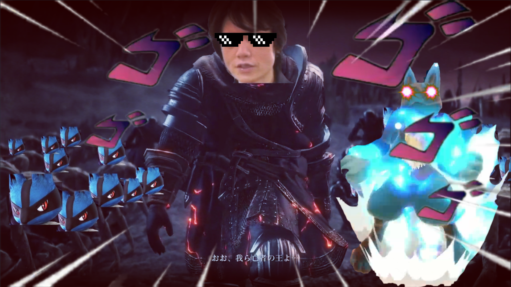

Youtuber時代
自主制作
2020年から2022年頃までYoutuberを
目指していた時期の動画とサムネイルを掲載します。
- 
- 
- 概要
-
中国の画像2枚とピアノの画像は先日作成したものです。
他の2枚は当時作成していた動画のサムネイルです。
下記に当時作成した動画のリンクを記載します。
正直お恥ずかしいですが、もしお時間があればご覧頂きたいです。
動画編集に関しては当時Filmora9やPhotoscape
という無料ソフトを使用していましたが、
現在はPhoto shopとPremier proを使用しています。
ポートフォリオは作成出来ませんでしたが、
illustratorでの
ロゴ・バナー・ポスター・名刺などの制作も可能です。
職業訓練校時代に作成していた作品は失くしてしまいました。
- リンク
-
ルカリオ.exe(4枚目のサムネイルの動画)
https://www.youtube.com/watch?v=TmuMAIGcaHE
【手元あり】IDJ徹底解説！興味ある人、良くわからない人必見！！【スマブラSP】
https://www.youtube.com/watch?v=NsBEJeINu5o
【スマブラSP】サムスじゃんけんはクソ #Shorts